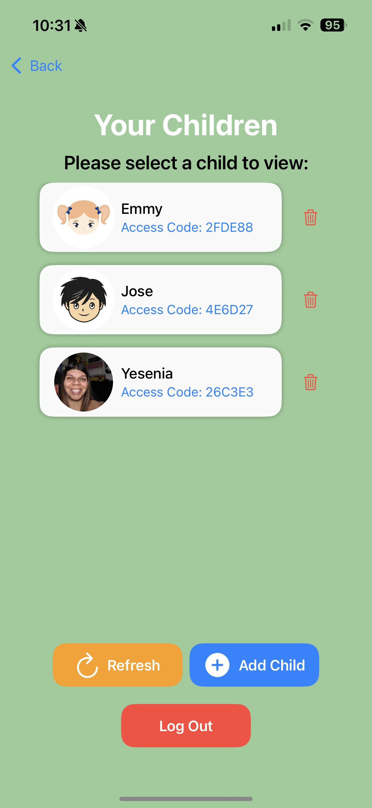
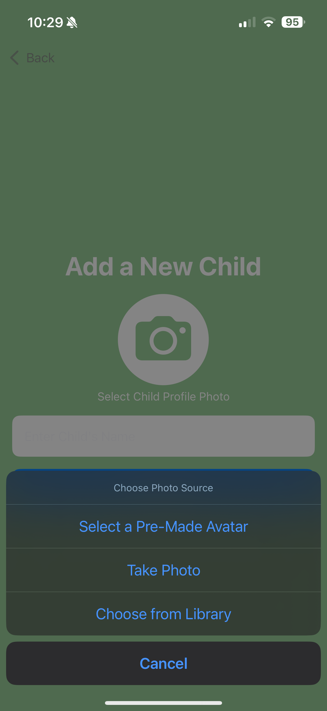
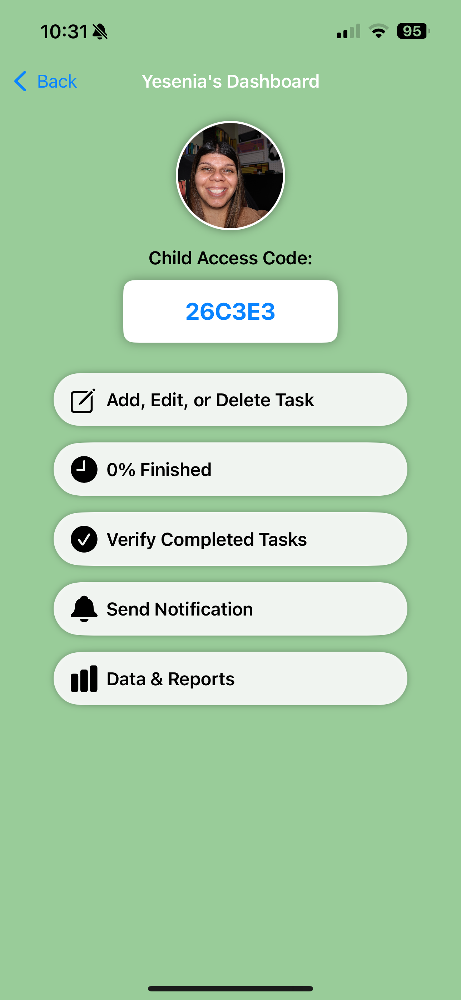
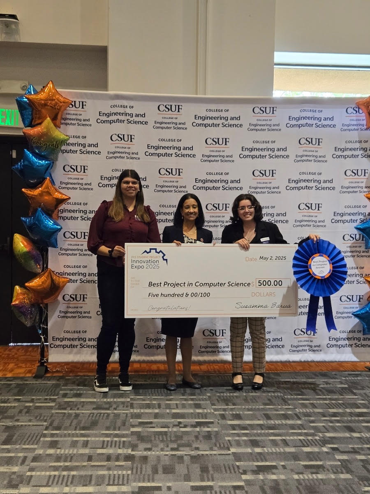

Task Adventure
Overview
Task Adventure is a gamified task management app designed to support children with Autism and ADHD in building daily routines and independence. The app was inspired by the personal experience of one of our team members, whose brother has level two Autism and benefits from structure, routine, and interactive engagement.
The app transforms everyday responsibilities into a playful, RPG-style experience that keeps children engaged while easing routine management for parents. The child-facing interface includes customizable avatars, a rewards system, and visual/audio task guidance to support diverse learning needs. Tasks earn points and customization options, while missed tasks gently impact a character's health, creating a motivational system rooted in positive reinforcement.
Parents use a separate, streamlined interface to create tasks, track progress, and view daily or long-term performance reports. This dual-interface system empowers children with autonomy while giving parents tools to monitor and support their development in a hands-on yet non-intrusive way.
Task Adventure is built using Swift and SwiftUI for native iOS devices, with Firebase providing secure, real-time cloud syncing. This project reflects our team’s shared interest in inclusive technology and creating tools that serve real-world needs.
Home Screen
This is the main screen that greets users when they open Task Adventure. From here, they can choose to enter either the Parent or Child portal depending on their role.

My Role & Goals
Our team of three worked collaboratively throughout the project, sharing responsibilities across all major phases from ideation and planning to development and testing. While each of us contributed to the full build, my primary focus was the Parent UI designing its flow, interface logic, and core functionality.
I led the development of the parent-side experience, including task creation, child account linking, progress monitoring, and notification logic. I ensured a smooth integration with Firebase so that data synced securely and accurately between parent and child accounts. I also helped shape the overall app structure, contributed to front-end styling, and supported feature testing and debugging across both interfaces.
Our shared goal was to create an app that balanced structure and engagement, one that empowered children with special needs while giving parents the tools to support them meaningfully.
Project Goals
The primary goal of Task Adventure was to create a fun, engaging mobile experience that would help children; particularly those with Autism and ADHD, stay focused and motivated while completing everyday tasks. By turning routines into an interactive game, the app aimed to reduce the stress often associated with chores and give children a sense of accomplishment through positive reinforcement.
For parents, the goal was to provide a reliable tool to manage daily tasks without constant supervision. The app was designed to give caregivers peace of mind, allowing them to set up and track their child’s routine while encouraging independence.
On the technical side, our team set out to build something meaningful an app that could genuinely impact daily lives. We focused on designing for accessibility and inclusion, creating a product that could serve a community often underserved by mainstream tech. Our goal was to build not just a functioning app, but one that could offer value to families that need thoughtful tools and may not always have access to specialized resources.
Development Process
We began by researching which user groups could benefit most from supportive digital tools, and quickly found that children with Autism often struggle with focus, routine, and motivation. We discovered that many of these children respond positively to gamification and predictable structure, which inspired our app concept: turning daily tasks into an interactive, reward-based experience.
Once we defined our user base and goals, we used Figma to design the full UX flow from both the child's and parent's point of view. We mapped out user journeys, wireframed key screens, and ensured that each interface was tailored to the needs of its user with accessibility and engagement as top priorities.
From there, we built the application using Xcode with Swift and SwiftUI. The team collaborated through GitHub and connected all user data in real time using Firebase as our backend service. To enhance engagement, we incorporated Lottie animations for key actions and rewards. Our development process was iterative constantly testing, refining, and validating the logic behind the task system, reward feedback, and data synchronization.
Parent Dashboard – Manage Children
This screen allows parents to manage all linked child accounts. They can view their children, see access codes, add a new child, or remove an account. This functionality supports multiple-child households and provides a seamless way to switch views.
Adding a New Child Profile
When parents add a new child, they are prompted to create a profile by selecting a name and uploading or choosing a profile photo. They can take a picture, choose from their library, or select a pre-made avatar. This flexibility supports personalization and ease of use across different family setups.
Child Dashboard (Parent View)
Once a child is selected, the parent is taken to their individual dashboard. This screen displays the child’s profile picture, access code, and task progress, and gives the parent access to manage tasks, verify completions, send reminders, or view performance reports. All content is dynamically fetched from Firebase based on the selected child’s ID, ensuring personalized and real-time updates.
Task Completion & Progress Tracking
Parents can track their child's progress in real time through the Progress Tracker. Each task is visually marked as incomplete or complete, with a circular progress ring summarizing how many tasks have been finished. This gives both parent and child a clear sense of structure and achievement.
Child Task View
The child interface features a fun, gamified design with a forest-themed background. Here, children can see their assigned tasks for the day. Tasks appear in red when they are not yet completed, creating a clear visual cue. The simplicity and layout are designed to reduce distractions while encouraging focus and task ownership.

Gamified Task Guidance
Each task includes a voice prompt, a matching visual, and an animated avatar to help keep the child engaged. The visuals reinforce understanding for children who may benefit from picture-based cues, while the audio provides accessible instruction. As the child progresses, the avatar reacts and task progress is tracked dynamically.


Task Completion Feedback (Child View)
Once all tasks are completed, the child is shown a confirmation screen with all tasks marked in green. This visual feedback reinforces a sense of achievement and closes the loop on the day’s responsibilities. It aligns with the app’s goal of building positive routines through clarity and reward.

CSUF ECS Innovation Expo
Our team was honored to receive the Best Project in Computer Science award at the 2025 CSUF ECS Innovation Expo. This recognition reinforced the technical quality and real-world impact of our work.
What I Learned
While we had studied Agile methodologies and app development concepts in class, this project was where everything truly came together. Task Adventure was our opportunity to apply what we’d learned in a real-world scenario from planning and wireframing to testing, iteration, and problem solving.
Throughout the project, we sharpened critical soft skills like communication, collaboration, and team-based decision-making. Technically, we grew more confident in using Swift, SwiftUI, Firebase, GitHub, and Lottie tools we had never worked with before this project.
The success of our process and execution was validated when we were awarded Best in Computer Science at the CSUF ECS Innovation Expo. This recognition affirmed not only the quality of our build, but also the social impact and user-centered thinking behind our app.
What’s Next
After winning $500 at the CSUF ECS Innovation Expo, we plan to reinvest our prize into improving the app’s infrastructure and scalability. Our first goal is to implement Firebase Storage to support cloud-based image uploads and make cross-device syncing possible a feature that wasn’t feasible during our initial development due to budget constraints.
We also plan to rebuild the app using React Native so we can launch on both iOS and Android with a shared codebase. This shift will allow us to reach a broader audience and streamline our development process for future iterations.
Once core development is complete, we will move into formal testing and QA to refine performance and address any edge cases or usability issues. Our long-term goal is to release Task Adventure as a subscription-based mobile app and partner with schools or organizations that support children with special needs. We hope to make routine-building accessible, engaging, and empowering for families everywhere.